Parques e rotas do Paraná
Turismo de natureza como vetor de desenvolvimento econômico
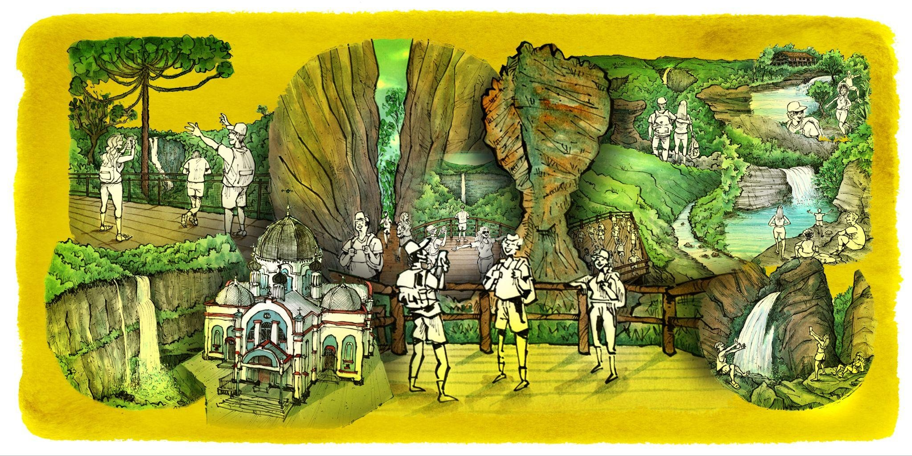
Rota Coração da Mata Atlântica
Rota ilustrada na plataforma Rotas Airbnb Brasil, lançada no Palácio Iguaçu com o Airbnb e a Secretaria de Turismo do Paraná. Uma segunda frente mentorou empreendimentos do litoral selecionados por edital público.
mentorados
individualizadas
on-line
integração
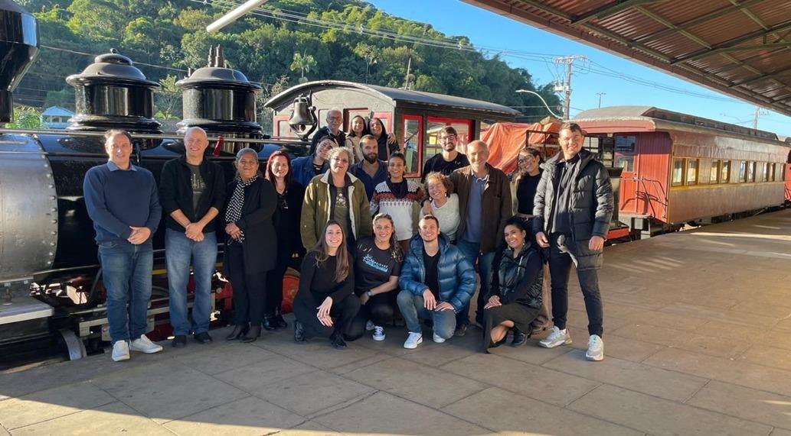
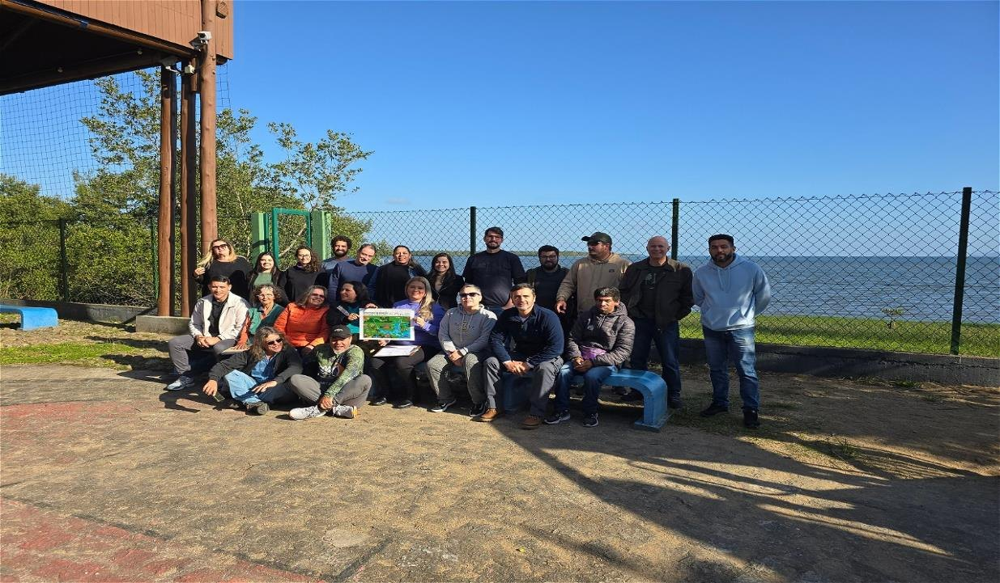
Fase 01 concluída
Em parceria com o Instituto Água e Terra (IAT), a Invest Paraná levou a metodologia do Programa Vocações Regionais Sustentáveis ao entorno de três Unidades de Conservação, com oficinas, pesquisa de campo, diagnósticos e Planos de Uso Público.
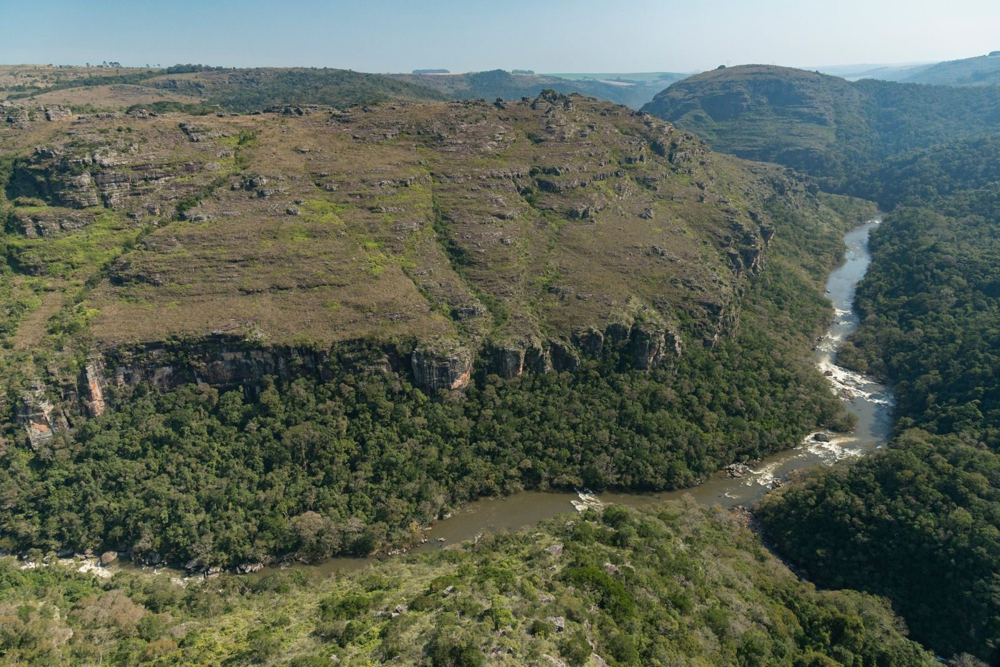
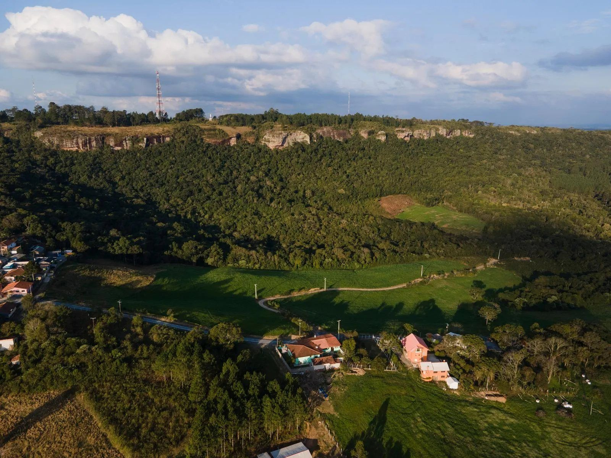
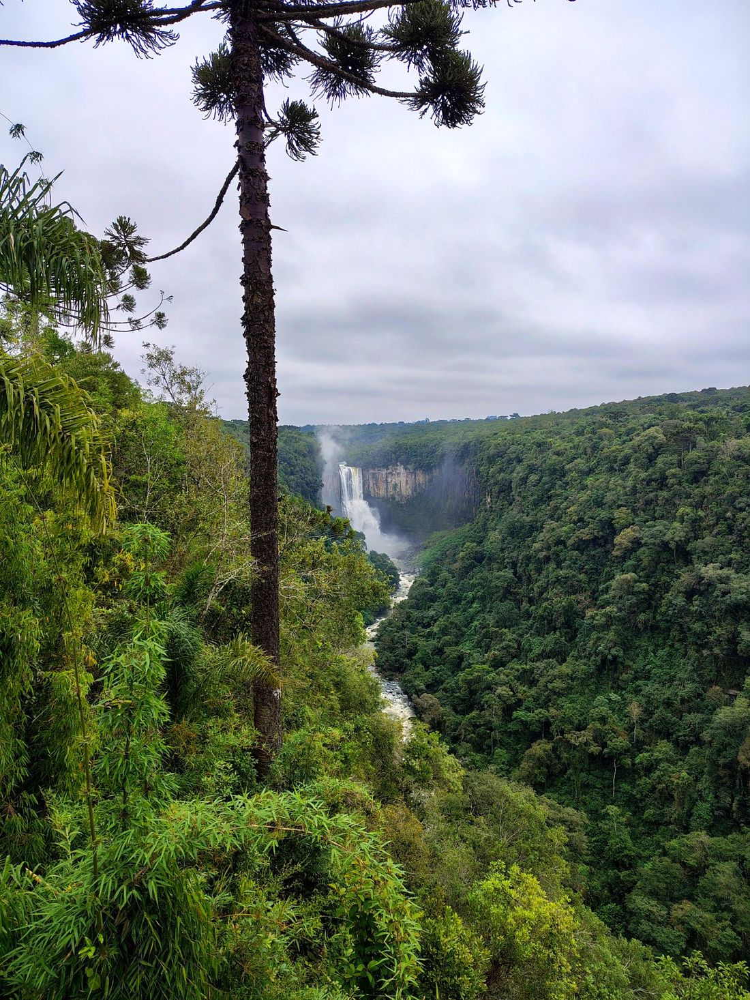
Conservação que gera renda
Um parque com visitação bem planejada pode gerar renda para quem vive ao seu redor, sem abrir mão da conservação.
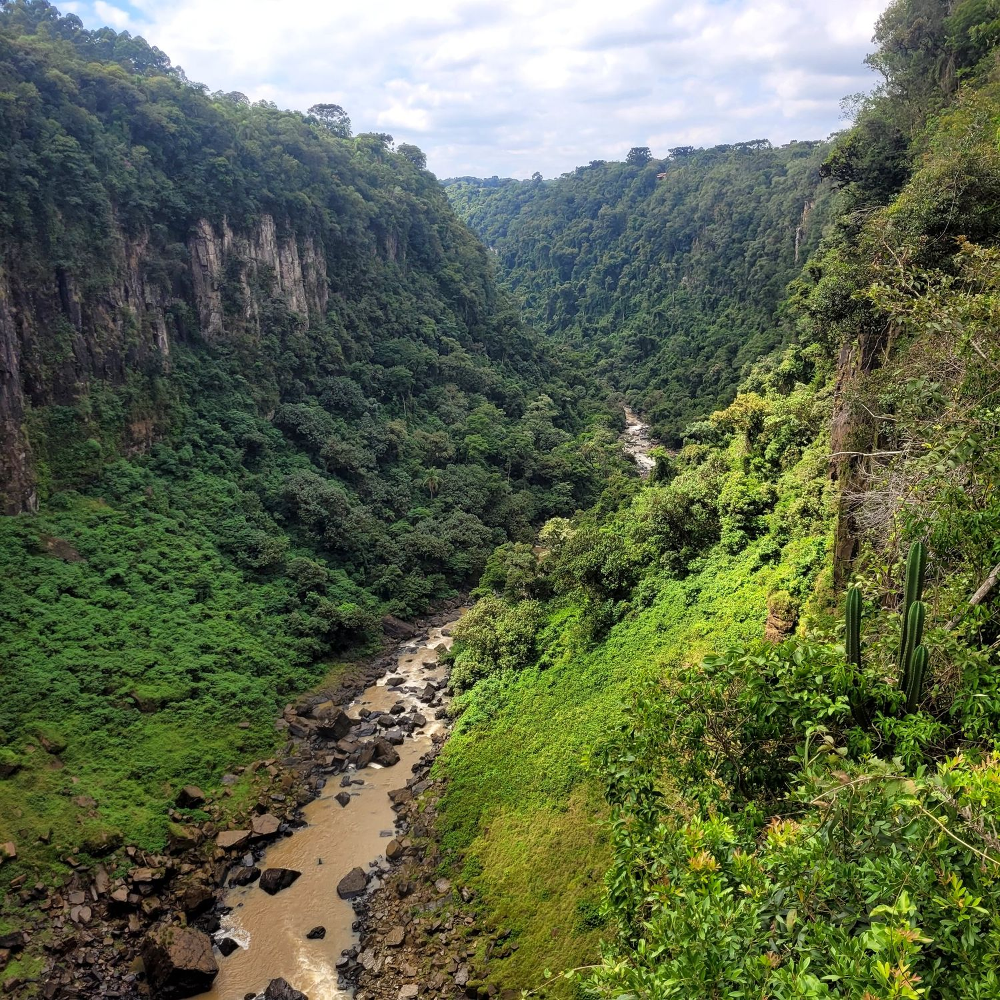
Permanência
Hospedagem e roteiros entre parque, centro histórico e área rural para transformar o bate-volta em pernoite.
Serviços ao visitante
Alimentação, água, sanitários e sinalização lideram as demandas nos três parques.
Produção local
Artesanato e produtos coloniais quase não chegam ao parque; 87% dos artesãos do Salto São João apoiam selo de origem.
Contribuição do visitante
De 75% a 93% dos turistas apoiam taxa de ingresso revertida em manutenção e conservação.
Rota dos Parques do Paraná
Amplia a abordagem da Rota Coração da Mata Atlântica para quatro regiões do Estado, conectando os parques e seus territórios a experiências, produtos e serviços locais.
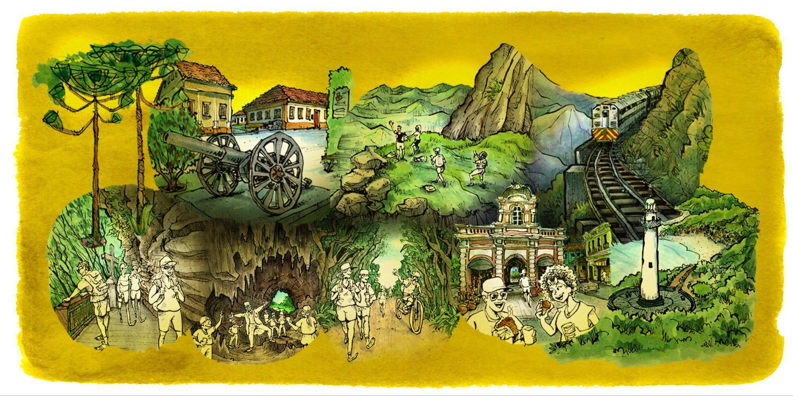
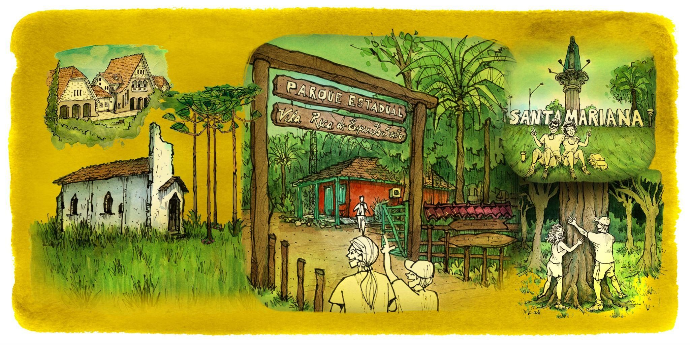
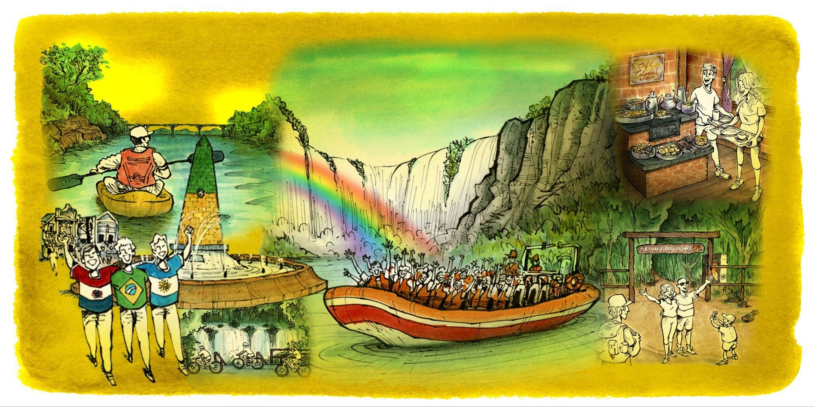
Arredores de Curitiba e litoral
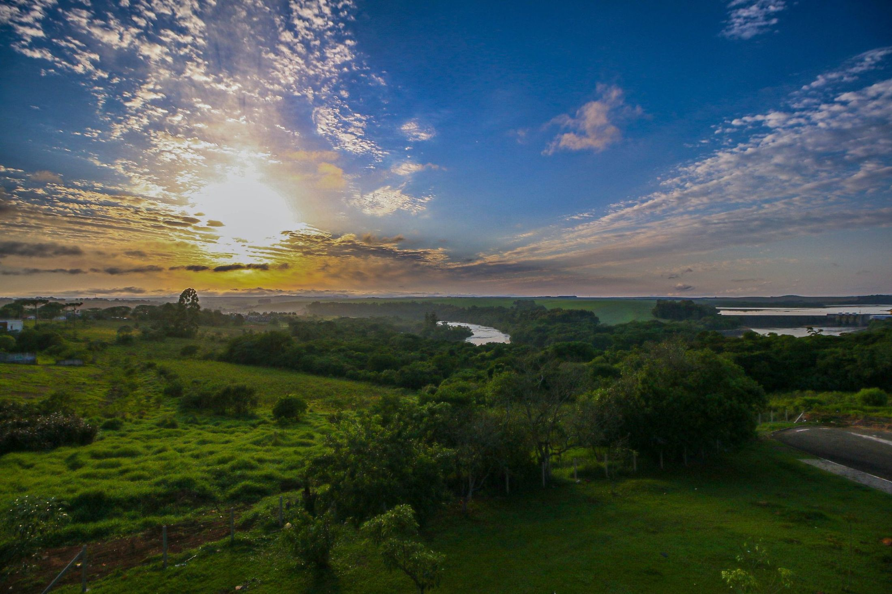
Muito obrigado
Invest Paraná · Diretoria de Desenvolvimento Econômico
